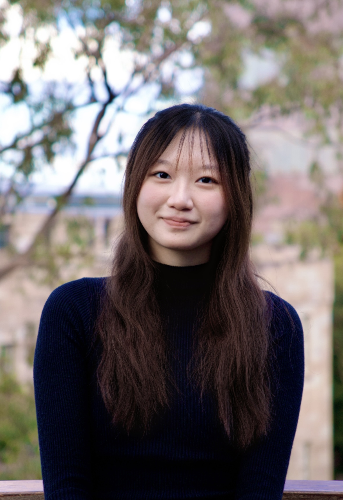

Passionate about social causes, sustainability, and community-driven change. Business student, changemaker, and music enthusiast.

Hello everyone! I'm Clare, an incoming freshman at Nanyang Technological University, pursuing Business with a Second Major in Sustainability. I believe deeply in collective responsibility and community-driven change.
With hands-on experience planning large-scale community events, leading sustainability initiatives, and tutoring underprivileged children, I've developed strong skills in navigating challenges and making meaningful impact.
I'm driven by a "We First" mindset, the belief that when each of us looks out for one another, we stop competing and start progressing together.